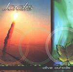

| Artist: | Jadis |
| Title: | Alive Outside |
| Label: | Jadis Music JAD 006 |
| Length(s): | 61 minutes |
| Year(s) of release: | 2001 |
| Month of review: | [04/2002] |
| 1) | Understand | 5.20 |
| 2) | Where In The World | 6.10 |
| 3) | Racing Sideways | 4.29 |
| 4) | Wonderful World | 8.05 |
| 5) | Alive Inside | 4.40 |
| 6) | Counting All The Seconds | 6.13 |
| 7) | Batstein | 6.18 |
| 8) | Holding Your Breath | 6.08 |
| 9) | Weather With You | 2.55 |
| 10) | Hear Us | 3.59 |
| 11) | Comfortably Numb | 6.36 |
After a very disappointing Somersault, the band returned to the fore with the return of Orford and Jowitt and recording their best album yet, Understand. On the live album, here being reviewed we find four tracks from this album and what can I say about them: the band brings them in a professional way without changing overly much. The music does sound live, but not organic, if you know what I mean. The song are not all extended. Understand for instance is relaxed popsong with a focus on a strong vocal melody to which Orford does the backing. Where In The World is a bit more atmospheric, but has its catchy moments as well. After a vibrant beginning Racing Sideways has a somehat spacey guitar sound. The bass playing is particularly audible here. Wonderful World is a track from More Than Meets The Eye and is definitely more proggy with plenty of space for Orford keyboards in addition to the strong ever present guitar playing by Chandler.
With Alive Inside and Counting All The Seconds we return to Understand. Not bad, although I am not that satisfied with the rocky chorus of the former. Counting All The Seconds shows we might dub Jadis the Dire Straits of prog with their relaxed sound. The guitar solo is a sharp one though.
Batstein is one from Somersault and quite complex and energetic even. Plenty of variation, but compositionally not as strong as the other tracks. Holding Your Breath from More Than Meets The Eye is quite Saga like. It reminded me of Don't Be Late and has some nice tension building. The theme of keyboards in the middle is particularly good.
A Neil and Tim Finn cover is Weather With You. A nice memorable pop song, but it does not really fit in well. The vocal melody on Hear Us reminds me of Marillion, and the guitar solo might remind some of Rothery. There is some rhythm guitar here and the bass pumps away nicely.
The album closes with a cover of Floyds Comfortably Numb. A powerful version with lots and lots of guitar of course. The drums are a bit too monotonous, but might be part of the song.